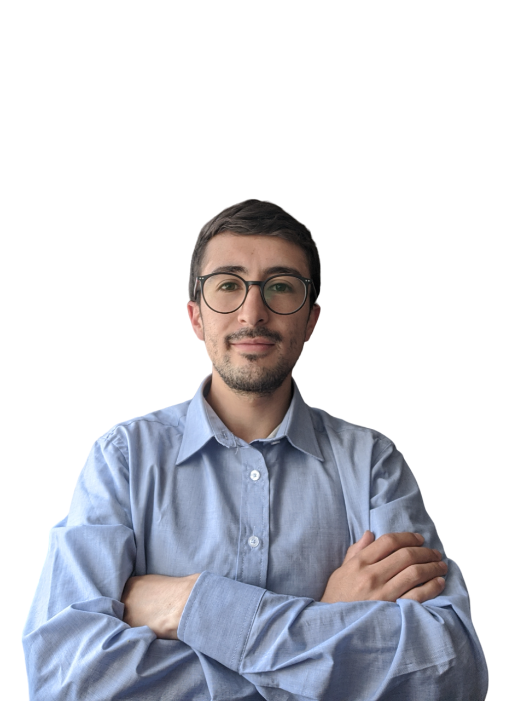

Diego Morales
Desarrollador Front End & Ingeniero Biomédico

Contacto
Sobre Mi
Ingeniero biomédico con conocimientos en programación, equipos de diagnóstico
y tratamiento, así como procesamiento digital de señales e imágenes médicas.
Alta competencia en ingeniería hospitalaria y clínica, legislación y administración
sanitaria. Con experiencia en el sector salud, en el área clínica y en empresas
dedicadas a la venta y soporte de dispositivos y equipos biomédicos. Orientado a
resultados, responsable, analítico, proactivo y con excelente actitud hacia el
trabajo en equipo, consciente del sentido de urgencia y con gran capacidad de
adaptación al trabajo en situaciones complejas.
Formación Académica
- Ingeniero Biomédico / Universidad Manuela Beltrán, 2022
- Diplomado en Fundamentos Six Sigma / Universidad Manuela Beltrán, 2020
- Técnico en Comercio Internacional / Servicio Nacional de Aprendizaje, 2013
Conocimientos en Programas Informáticos
- Procesadores de texto y datos: Word,Excel,PowerPoint
- Software de diseño y programación: Matlab,Proteus,Multisim,Labview,Python
- Software CRM y ERP: Salesforce y SAP
Idiomas
Experiencia Profesional
- Field Service Rep - Boston Scientific, abril 2022 - junio 2022
- Técnico de Soporte y Mantenimiento - Fresenius Medical Care, septiembre 2021 -
abril 2022
- Asistente Técnico - Fundación Santa Fe de Bogotá, abril 2021 - agosto 2021